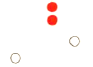
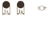
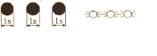

| 161. Кой кораб носи тези светлини?: |
|
Кораб, по-дълъг от 50 м, на котва Кораб без управление Пилотски кораб Риболовен кораб |
| документ регламентиращ правилния отговор: GOLREG (rule30/a) |
| 162. Кой кораб носи тези светлини?: |
|
Пилотски кораб, изпълнява задълженията си Кораб без управление, на ход Кораб, по-къс от 50м, на котва Риболовен кораб, трали |
| документ регламентиращ правилния отговор: GOLREG (rule30/a) |
| 163. Кой кораб носи тeзи светлини?:  |
|
Заседнал кораб с дължина по- голяма от 50м Заседнал кораб с дължина по-малка от 50м Пилотски кораб Риболовен кораб, трали |
| документ регламентиращ правилния отговор: GOLREG (rule30/d) |
| 164. Кой кораб носи тези знаци през деня?: |
|
Кораб без управление Риболовен кораб Пилотски кораб Заседнал кораб |
| документ регламентиращ правилния отговор: GOLREG (rule30/d) |
| 165. Кораб, с дължина по- малка от 7м., длъжен ли е да показва светлините и знаците за "Кораби на котва": |
|
Длъжен е при всички обстоятелства Не е длъжен Длъжен е, когато е в райони, където обикновено плават други кораби Не е длъжен, когато няма котва |
| документ регламентиращ правилния отговор: GOLREG (rule30/e) |
| 166. Кораб, с дължина по-малка от 12 м., длъжен ли е да показва светлините и знаците за "Заседнали кораби": |
|
Длъжен е, когато е заседнал в теснина или фарватер Длъжен е, когато е в котвена стоянка, или близо до нея Длъжен е при всички обстоятелства Не е длъжен |
| документ регламентиращ правилния отговор: GOLREG (rule30/f) |
СВЕТЛИННИ И ЗВУКОВИ СИГНАЛИ - ИЗИСКВАНИЯ, ОПИСАНИЯ, ПРАВИЛА
|
| 167. Какви звукосигнални средства трябва да има кораб с дължина над 12м., но по-къс от 100м.?: |
|
Свирка и камбана Свирка, камбана и гонг Свирка Камбана |
| документ регламентиращ правилния отговор: GOLREG (rule33/a) |
| 168. Чувате един къс звук или виждате един къс проблясък: |
|
"Имам намерение да ви изпреваря от левия борд" "Имам намерение да ви изпреваря от десния борд" "Изменям своя курс на ляво" "Изменям своя курс на дясно" |
| документ регламентиращ правилния отговор: GOLREG (rule34/a/b) |
| 169. Чувате два къси звука или виждате два къси проблясъка:  |
|
"Имам намерение да ви изпреваря от левия борд" "Имам намерение да ви изпреваря от десния борд" "Изменям своя курс на ляво" "Изменям своя курс на дясно" |
| документ регламентиращ правилния отговор: GOLREG (rule34/a/b) |
| 170. Чувате три къси звука или виждате три къси проблясъка:  |
|
"Двигателите ми работят на заден ход" "Нямам ход относно водата" "Изменям своя курс на дясно" "Изменям своя курс на ляво" |
| документ регламентиращ правилния отговор: GOLREG (rule34/a/b) |